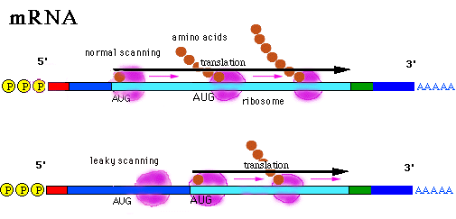

Rintaro Saito Takefuji Laboratory Genetic Group
 In fact, only 3/4 of mRNAs in Genbank database start translation at the first AUG. We used neural networks to predict the translation initiation site on mRNA. There are many systems that predict translation initiation sites(more precisely, coding region) of DNA. For example, GRAIL, GeneParser, Gene ID and FGENEH are well known systems for the prediction of coding regions. GRAIL predicts exon with accuracy of 90%, using dynamic programming. GeneParser predicts coding region with accuracy of 86%, using dynamic programming and neural network. GeneID predicts coding region with accuracy of 88% using evaluation of atomic sites. FGENEH predicts 89% of exons and 98% of introns of human DNA using discriminant function. They predict translation initiation sites and splicing sites of DNA by using a lot of data of DNA sequences, such as nucleotide patterns around specific sites, nucleotide content of coding regions, promoter regions, or introns. Most of those input data are not biologically important for translation initiation. But our system is only focused on translation initiation site of mRNA, and it only uses data of sequences that seems to be biologically important for the selection of translation initiation. That are 10 nucleotides around AUG triplets and information about whether stop codons are located downstream of AUG triplet in the same frame within 80 bases. It has been shown by M.Kozak that 9 bases before start codons and 1 base just after start codons play an important role for translation initiation. And if the stop codons are located just after start codons, translation will be initiated at the next AUG. Some experiments showed that stop codons within about 80 bases from start codons will make the translation to be started at the next AUG. Our system uses only those two factors for the prediction. And once our system is trained by mRNA sequences of vertebrates, it can be used to predict translation initiation site of vertebrates in general.
Materials and Methods: We used neural networks in our system to predict translation initiation site of mRNA. The overview of the system is described in the figure below.
Figure: Overview of the system
Figure: Overview of the neural network
Results: After more than 50 iteration steps(but less than 100 iteration steps) of learning, all five neural network learned more than 98% of nucleotide patterns around start codons in the training set as described in the table.
| Training | Iterations | Rate |
| 1 | 77 | 98.31% |
| 2 | 48 | 98.22% |
| 3 | 61 | 98.31% |
| 4 | 58 | 98.52% |
| 5 | 58 | 98.38% |
Of 4023 mRNA sequences in the test set, our system predicted 3789(94.18%) translation initiation sites correctly.
Discussion: The accuracy 94% may indicate how stop codons located downstream of AUG triplet and 10 bases around start codons are biologically important for the decision of translation initiation site. Using only such amount of information, we can predict translation initiation site with that accuracy. There are 6% of sequences that our system did not predict their translation initiation sites correctly. The failure is probably due to the errors in the database or due to other phenomenon that has influence on leaky scanning. One of the main phenomenon is secondary structure of mRNA. It may disturb or enhance the recognition of translation initiation site. If this phenomenon is taken account in our system, the accuracy may be better. But it may be hard to determine what form of secondary structure that will be made, and what form of secondary structures that affect translation initiation.
Conclusion: Our system can predict translation initiation site of vertebrate mRNAs in general, with the accuracy of 94%, with small amount of information in the sequence.
References:
Guigo R. et al.(1992) Prediction of gene structure. J.Mol.Biol. 226:141-157
Kozak,M.(1986), Influences of mRNA secondary structure on initiation by eucaryotic ribosomes, Proc.Natl.Acad.Sci.83:2850-285
Kozak,M.(1987) An analysis of 5'-noncoding sequences from 699 vertebrate messenger RNAs, Nuc.Acid.Res. 15:8125-8148
Kozak, M.(1987) Effect of intercistronic length on the efficiency of reinitiation by eucaryotic ribosomes. Mol.Cell.Biol.10:3438-3445
Kozak,M.(1989),The Scanning Model for Translation:An Update, J.Cell.Biol. 108:229-24
Kozak,M.(1990),Downstream secondary structure facilitates recognition of initiator codons by eukaryotic ribosomes, Proc.Natl.Acad.Sci.USA 87:8301-83
Luukkonen BG et al.(1995) Efficiency of reinitiation of translation on human immunodeficiency virus type 1 mRNAs is determined by the length of the upstream open reading frame and by intercistronic distance. J.Virol.69:4086-4094
Mehdi H. et al.(1990) Initiation of translation at CUG, GUG and ACG codons in mammalian cells. Gene 91:173-178
Snyder, EE. et al.(1993) Identification of coding regions in genomic DNA sequences:An application of dynamic programming and neural networks. Nuc.Acid.Res. 21:607-613
Solovyev VV et al.(1994) Predicting internal exons by oligonucleotide composition and discriminant analysis of spliceable open reading frames. Nuc.Acid.Res. 22:5156-5163
Xu,Y. et al.(1994) Constructing gene models from accurately predicted exons:an application of dynamic programming. Comput.Appl.Biosci. 10:613-623